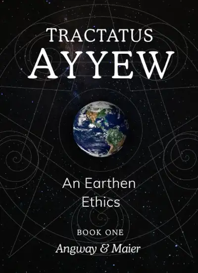

Welcome to the EarthBook edition of the Tractatus Ayyew.
Get our updates...
As we become more and more aware of the ecological crises triggered by our modern age, we long to green our ways. However, what does 'green' actually mean and what exactly should it require? Inspired by magnificent creatures, great cultures and our planet's pattern this book lays out an ethics anchored in Earth's example.
Quick Start
Preamble
200 words
Preface
557 words
Two Sentences & a paragraph
540 words
Book One
Imagine
1,095 words
Plastic 1.0
623 words
A Stellar Story
1,021 words
Patterns of Process
837 words
Kindred Relations
1,508 words
Nature's Fallacy
973 words
The Earthen Ways
784 words
Book Two
1 | Cycles that Spiral
1,682 words
2 | The Salmon's Spiral
2,294 words
3 | The Ammonite's Example
not yet published
4 | The Polyp's Pattern
not yet published
5 | The Mycorrhyzal's Awareness
not yet published
Book Three
Plastic 2.0
not yet published
Plastic Sequestration
not yet published
Petro-capital Transition
not yet published
Ad Pax Ayyew
not yet published
Appendix
Dedication
26 words
Ecological Accounting
48 words
For-Earth Enterprise
20 words
Credits & Acknowledgements
218 words
Writing & Publishing
80 words
Banayan & Russell
153 words
Select Bibliography
728 words
Glossary
342 words